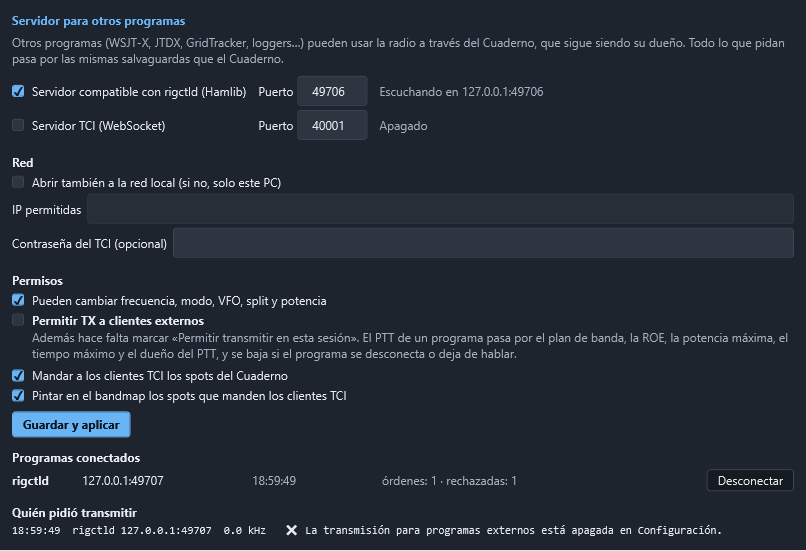

Conectar otros programas
El Cuaderno abre el equipo en exclusiva: mientras está abierto, ningún otro programa puede usar el puerto CAT. Para que WSJT-X, JTDX, GridTracker o un logger puedan usar la radio a través del Cuaderno, el Cuaderno lleva un servidor para otros programas. El Cuaderno sigue siendo el dueño de la radio: todo lo que pidan esos programas pasa por él y por sus salvaguardas.
Hay dos servidores, y los dos arrancan apagados:
| Servidor | Para qué programas | Dirección por omisión |
|---|---|---|
| rigctld compatible (protocolo de red de Hamlib) | WSJT-X, JTDX, fldigi, GridTracker y casi cualquier programa con «Hamlib NET rigctl» | 127.0.0.1:4532 |
| TCI (Expert Electronics, por WebSocket) | Programas que hablan TCI | ws://127.0.0.1:40001 |


Encenderlo
- Abra Configuración › Servidor para otros programas.
- Marque Servidor compatible con rigctld (o Servidor TCI) y deje el puerto que trae.
- Pulse Guardar y aplicar. Al lado de cada servidor se ve si está escuchando y dónde.
En la barra de estado aparece Programas externos: N, con el número de programas conectados. Al pasar el ratón por encima se ve quiénes son.
La lista Programas conectados se actualiza en vivo: protocolo, dirección, hora de conexión, órdenes atendidas y rechazadas, y TX si ese programa tiene el PTT. Desconectar lo echa; si estaba transmitiendo, primero se baja el PTT.
Dejar transmitir a otros programas
Leer la radio y cambiar frecuencia, modo, VFO, split y potencia no pone nada en el aire. Para que un programa pueda transmitir hacen falta las dos cosas:
- Permitir TX a clientes externos, en este apartado. Es el interruptor general, está apagado de fábrica y pide confirmación al encenderlo.
- Permitir transmitir en esta sesión, el mismo pestillo del módem y de la telegrafía, que empieza cerrado en cada arranque.
El PTT de un programa es una fuente de PTT más, con su nombre («rigctld 127.0.0.1:50311» o «TCI 127.0.0.1:50320»), y pasa por el vigilante igual que el MOX, el módem o la fonía (ver Salvaguardas de transmisión):
- fuera del plan de banda no se transmite;
- se corta por ROE alta o antena abierta, y tras un corte no se rearma hasta que el programa mande soltar;
- la potencia se baja al máximo de la banda antes de salir;
- si otra fuente ya está en el aire, el programa no puede ni subir ni soltar ese PTT;
- vale el tiempo máximo de transmisión de siempre.
Además, el PTT de un programa se baja en el acto si el programa se desconecta, si deja de hablar más de 10 segundos, si se cierra el pestillo de la sesión o si se apaga la TX externa. Mientras el equipo está en el aire, los programas no pueden cambiar la frecuencia ni el modo.
Cada petición de transmitir queda en Quién pidió transmitir, con la hora, el programa, la frecuencia, el modo y si se concedió o por qué no. También se escribe en el registro del programa.
WSJT-X y JTDX (Hamlib NET rigctl)
En WSJT-X: File › Settings › Radio.
| Campo | Valor |
|---|---|
| Rig | Hamlib NET rigctl |
| Network Server | 127.0.0.1:4532 |
| PTT Method | CAT |
| Mode | Data/Pkt (o None si prefiere poner el modo a mano) |
| Split Operation | Rig o Fake It |
| Poll Interval | 1 s |
Pulse Test CAT (debe ponerse verde) y Test PTT. Para que Test PTT transmita tienen que estar marcados los dos permisos de arriba; si no, el Cuaderno lo rechaza y WSJT-X avisa de un error de PTT. JTDX se configura igual.
El audio no pasa por el servidor: en WSJT-X elija como entrada y salida el «USB Audio CODEC» del FT-710, como siempre.
GridTracker, fldigi y otros con Hamlib
Cualquier programa que ofrezca Hamlib con el modelo NET rigctl (número 2) se conecta igual: dirección 127.0.0.1 y puerto 4532. GridTracker y los loggers suelen limitarse a leer la frecuencia y el modo.
N1MM Logger+
N1MM Logger+ no habla Hamlib ni TCI: solo sabe manejar la radio por un puerto serie con el CAT del propio equipo. Por eso no puede usar todavía este servidor. Lo que sí funciona hoy:
- el Cuaderno ya recibe por UDP los contactos que reparte N1MM, sin tocar la radio;
- para que N1MM mueva la radio a través del Cuaderno haría falta una emulación CAT por un puerto COM virtual, que queda para una fase posterior.
Programas TCI
En el programa, elija como radio TCI con la dirección 127.0.0.1 y el puerto 40001. El servidor TCI atiende una lista blanca de órdenes:
| Orden TCI | Qué hace |
|---|---|
vfo, dds | Leer y cambiar la frecuencia (canal 0 = VFO A, canal 1 = VFO B) |
modulation | Leer y cambiar el modo (usb, lsb, cw, am, nfm, digu, digl) |
trx | PTT, con las mismas salvaguardas que arriba |
split_enable | Split |
drive | Potencia de 0 a 100 %, recortada a la potencia máxima de la banda |
tx_enable, rx_smeter, trx_count, vfo_limits, modulations_list | Estado |
spot, spot_delete, spot_clear | Spots del programa, que se pintan en el bandmap |
El Cuaderno manda también sus spots del cluster a los programas TCI (se puede quitar).
Todo lo demás se rechaza y queda anotado: no hay tune, ni manipulación CW, ni nada parecido a run_cat_ex o CAT en bruto. No hay audio por TCI: trx:0,true,tci se rechaza. El audio por TCI queda para una fase posterior, porque meter audio de transmisión que llega por la red exige el mismo orden «camino en silencio → PTT → audio» que la fonía y el módem.
Seguridad
- Solo este PC. De fábrica los servidores escuchan en
127.0.0.1: desde otro ordenador ni se ve el puerto. - Red local, con lista. Abrir también a la red local pide confirmación y, aun abierto, solo entran este PC y las IP permitidas (una IP como
192.168.1.20o una red como192.168.1.0/24). No se aceptan redes enormes como0.0.0.0/0. No lo abra nunca a Internet. - Navegadores fuera. Una página web podría intentar hablar con
127.0.0.1. El servidor rigctld corta cualquier conexión que parezca HTTP, y el TCI rechaza toda conexión que traiga cabeceraOrigin, que es lo que mandan los navegadores. - Contraseña del TCI (opcional). Si la pone, el programa debe conectar a
ws://127.0.0.1:40001/?token=…o mandarAuthorization: Bearer …. La mayoría de programas TCI no saben hacerlo, así que solo sirve con programas propios. - Nada de CAT en bruto. Las órdenes rigctld
w,W,\send_cmd,b(CW),\set_powerstat, memorias, antenas y parecidas se contestan conRPRT -19y se anotan.
Órdenes rigctld que se atienden
| Corta | Larga | Qué hace |
|---|---|---|
f / F | \get_freq / \set_freq | Frecuencia en Hz |
m / M | \get_mode / \set_mode | Modo y ancho (USB, LSB, CW, PKTUSB…) |
v / V | \get_vfo / \set_vfo | VFO (VFOA, VFOB) |
t / T | \get_ptt / \set_ptt | PTT, por el vigilante |
s / S | \get_split_vfo / \set_split_vfo | Split y VFO de transmisión |
i / I | \get_split_freq / \set_split_freq | Frecuencia de transmisión en split |
x / X | \get_split_mode / \set_split_mode | Modo de transmisión en split |
l / L | \get_level / \set_level | RFPOWER (0 a 1, recortada al máximo de la banda) y STRENGTH |
\dump_state, \chk_vfo, \get_powerstat, \get_vfo_info, \get_lock_mode | Lo que preguntan los clientes al conectar | |
q | \quit | Cerrar la conexión |
También entiende la respuesta extendida (+f, +\get_freq). PKTUSB es el modo de datos: el Cuaderno lo pone como modo digital (DATA-U en el FT-710).